Work Experience

July 2024 - Current
Software Developer
Developing in-house applications and providing IT solutions to clients.

March 2024 - July 2024
Protege ICT Engineer
Provided solutions to ICT issues faced by the team.

September 2023 - February 2024
Freelance 3D Artist
Worked on 3D modelling and animation commissions.

March 2023-August 2023
IT Intern
Managed incident tickets, application support, and IT infrastructure support.